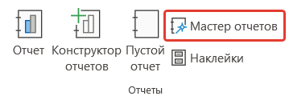
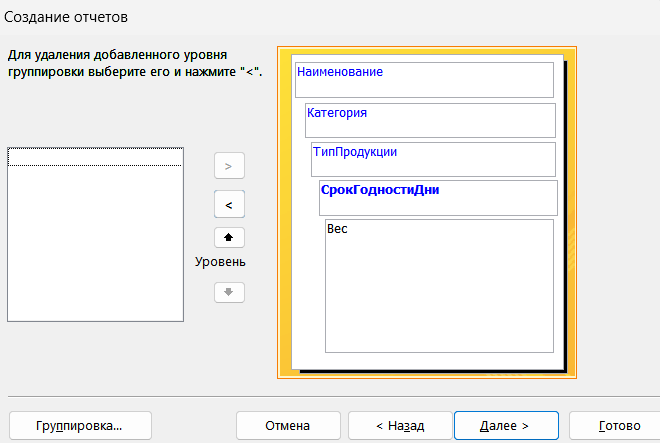
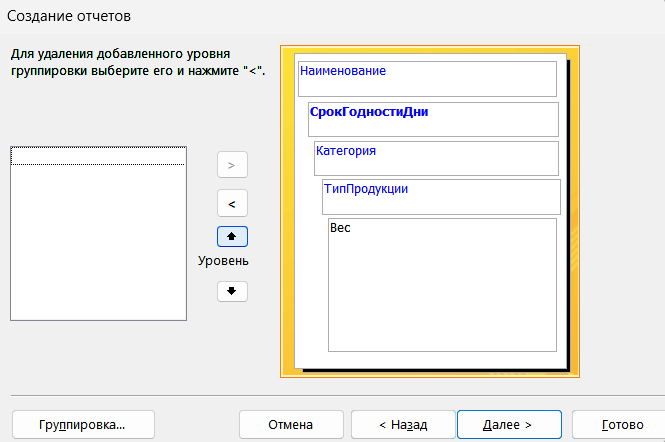
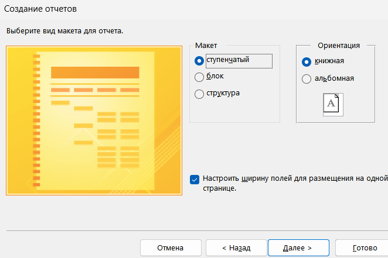
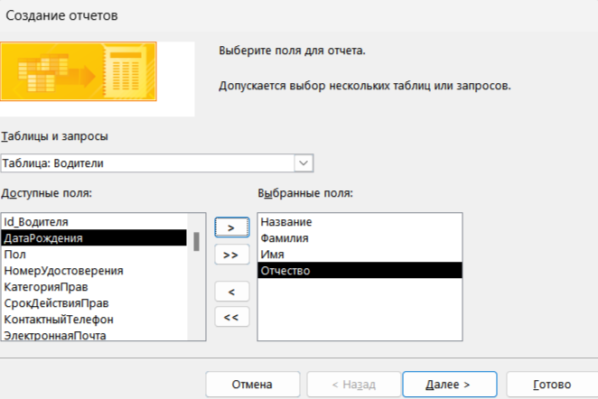
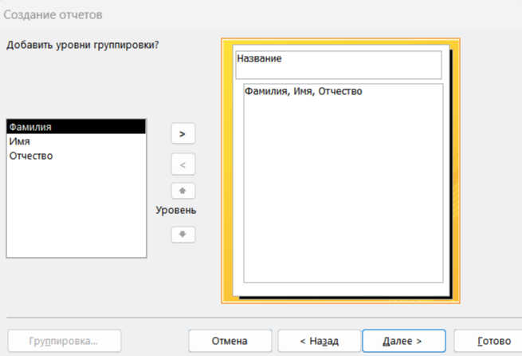
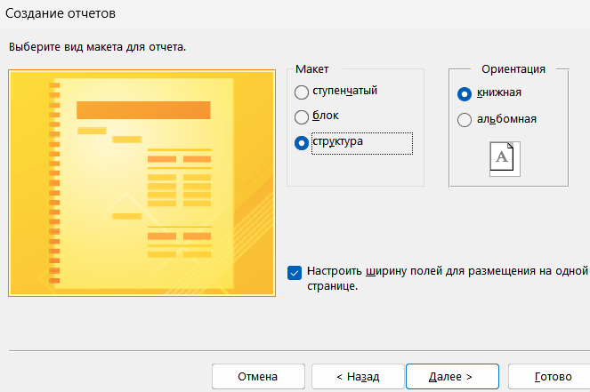
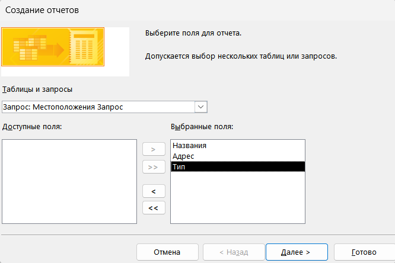
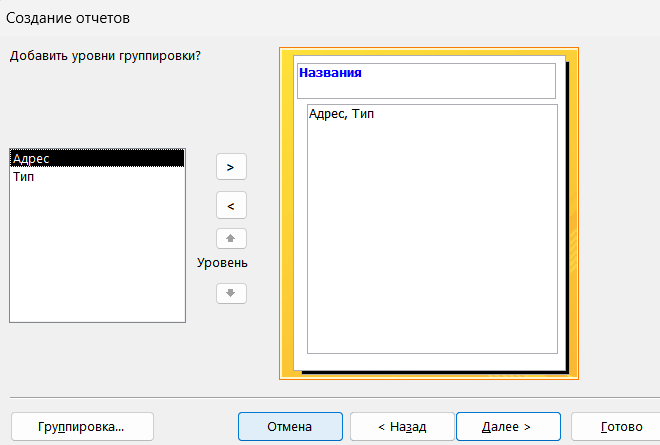
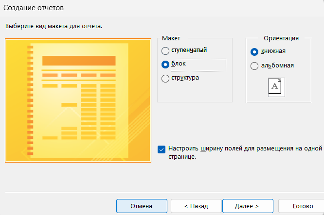

Формирование отчетов
Теоретическая часть
Цель работы: освоить навыки создания, настройки и форматирования отчетов в MS Access для представления и печати данных в удобном и читаемом виде
Отчет – это объект базы данных Access, предназначенный для форматированного отображения информации из таблиц или запросов, как правило, для печати или предоставления отчетной информации пользователям.
Отчеты можно создавать:
— На основе таблиц;
— На основе запросов;
С использованием группировок, расчетов и подотчетов.
Виды отчетов:
1. Простой отчет – быстрое создание отчета по выбранной таблице или запросу с автоматическим размещением полей.
2. Отчет с группировкой – позволяет группировать данные, а также по каждой группе данных выводить суммы, средние значения, количество, максимальные и минимальные значения.
3. Подотчеты – встраивание одного отчета в другой.
Практическая часть
1. Запускам MS Access и открываем проект
2. Для создания отчета по таблицам переходим на вкладку «Создание» и выбираем «Мастер отчетов»

3. Выбираем таблицу «Продукция» на основе этой таблицы мы будем составлять отчеты.
4. Выбираем все поля, кроме поля с id и нажимаем «Далее»
5. В окне «Создание отчетов» мы можем размещать поля по уровням

6. Также мы можем располагать в какой последовательности размещать поля при формировании отчета

7. Для отчета мы можем выбирать различные виды макетов, а также ориентацию

8. Отчеты в MS Access мы можем формировать с разными таблицами.
9. Для этого выбираем «Мастер отчетов», в появившемся окне выбираем таблицу «Организации»
10. В поле «Название», а из таблицы «Водители» выбираем поля с фамилией, именем и отчеством

11. Выбираем вид представления данных, чтобы название организации было в заголовке, а все остальное было в основной форме отчета

12. Для макета мы выбираем структуру и ориентацию на выбор

13. В итоге мы получаем отчет, в котором указаны водители, их фамилия, имя и отчество и в каких организациях они работаю
14. В MS Access отчеты можно формировать не только по существующим таблицам, но и по уже созданным запросам.
15. Возьмем уже ранее созданный запрос на местоположения с полями «Названия», «Адрес» и «Тип», откроем «Мастер запросов» и выберем все доступные поля.

16. Выбираем соответствующие уровни группировки для отчета
17. Столбец «Название» будет расположен в заголовке отчета.

18. Для макета отчета мы выбираем – блок и ориентацию – книжная.

19. Создайте по оставшимся запросам отчеты
20. Сохраните и закройте проект